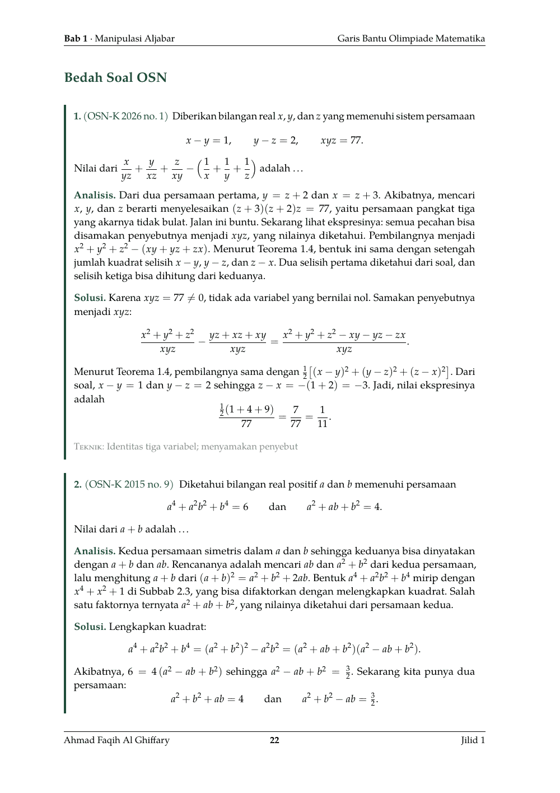

Jilid 1 · Dasar
v0.1 · 398 halaman · 2,2 MB
Aljabar, kombinatorika, teori bilangan, dan geometri dasar, ditutup dengan bab lintas bidang dan soal campuran.
Unduh PDF
Daftar bab
- Manipulasi Aljabar dan Bentuk Akar
- Aturan Pencacahan, Permutasi, dan Kombinasi
- Keterbagian, FPB, dan KPK
- Sudut dan Kesebangunan
- Polinomial dan Binomial Newton
- Luas Bidang dan Panjang Sisi
- Kongruensi dan Digit
- Barisan dan Deret
- Inklusi-Eksklusi dan Peluang
- Lingkaran dan Segiempat Tali Busur
- Nilai Mutlak, Floor, dan Logaritma
- Trigonometri dan Koordinat
- Rekursi dan Sarang Merpati
- AM-GM dan Ketaksamaan Dasar
- Lintas Bidang
- Soal Campuran
Contoh halaman
